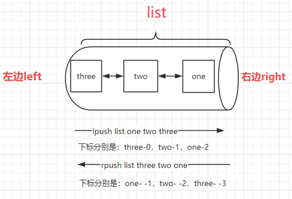
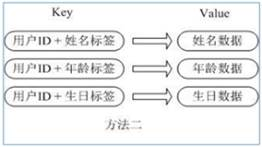
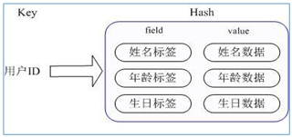
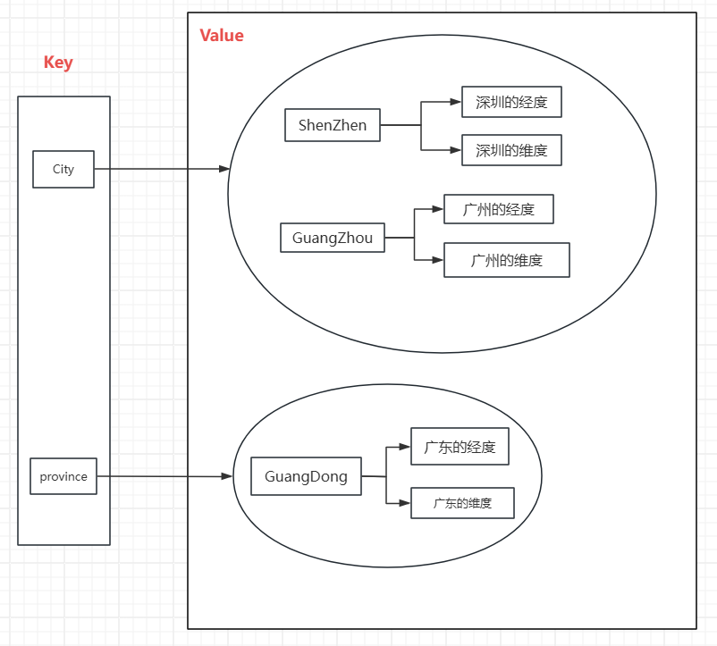
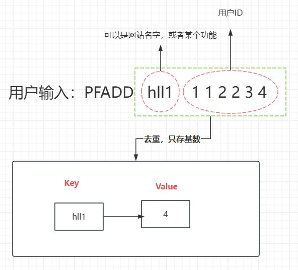
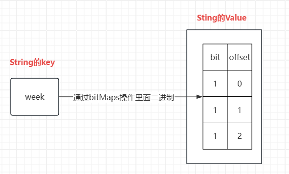

Redis有十多种数据类型：https://redis.io/docs/data-types/
常见的有5中：String、List、Set、Hash、SortedSet（Zset）
Redis的Key的基本命令
keys * 查看所有的key
Exists key [key...] 判断当前key是否存在。
EXPIRE key seconds 设置key 的过期时间，超过时间后，将会⾃动删除该key ，单位是秒。(热点数据)
TTL key 返回key剩余的过期时间。 这种反射能⼒允许Redis客户端检查指定key在数据集⾥⾯剩余的有效期。
- 如果key不存在或者已过期，返回 -2
- 如果key存在并且没有设置过期时间（永久有效），返回 -1 。
Move key db 将当前数据库的 key 移动到给定的数据库 db 当中。如果当前数据库(源数据库)和给定数据库(⽬标数据库)有相同名字的给定 key ，或者 key 不存在于当前数据库，那么 MOVE 没有任何效果。
TYPE key 返回key 所存储的value 的数据结构类型。
DEL key [key...] 删除指定的⼀批keys，如果删除中的某些key不存在，则直接忽略
flushall 清除全部库数据
flushdb 清空当前库数据
127.0.0.1:6379[1]> set name Mask
OK
127.0.0.1:6379[1]> set age 18
OK
127.0.0.1:6379[1]> exists age
(integer) 1
127.0.0.1:6379[1]> exists aa
(integer) 0
127.0.0.1:6379[1]> set hot aaa
OK
127.0.0.1:6379[1]> expire hot 10
(integer) 1
127.0.0.1:6379[1]> ttl hot
(integer) 7
127.0.0.1:6379[1]> ttl hot
(integer) 4
127.0.0.1:6379[1]> ttl hot
(integer) 2
127.0.0.1:6379[1]> ttl hot
(integer) -2
127.0.0.1:6379[1]> keys *
1) "name"
2) "age"
127.0.0.1:6379[1]> move age 0
(integer) 1
127.0.0.1:6379[1]> select 0
OK
127.0.0.1:6379> keys *
1) "age"
127.0.0.1:6379> type age
string
127.0.0.1:6379> del age
(integer) 1
127.0.0.1:6379>
Redis数据类型-String
String类型基本上可以包含任何数据，⽐如图⽚或者序列化的对象等。⼀个Redis中的字符串value最多可以是512M
String的使⽤场景：①计数器；②统计多单位数量；③粉丝数；④对象缓存储存
SET：添加或者修改已经存在的⼀个String类型的键值对（如果key不存在则是新增，如果存在则是修改）GET：根据key获取String类型的value# Set与Get 127.0.0.1:6379[1]> set name mask OK 127.0.0.1:6379[1]> get name "mask" 127.0.0.1:6379[1]> set name zhangsan # key存在，修改对应值 OK 127.0.0.1:6379[1]> get name "zhangsan" 127.0.0.1:6379[1]>GETSET：先获取再设置，如果get时值不存在返回空，然后在进⾏设置，如果get时值存在，返回对应的值，再进⾏修改··# GETSET 127.0.0.1:6379[1]> getset age 18 # key不存在，返回nil 同时设置值 (nil) 127.0.0.1:6379[1]> get age "18" 127.0.0.1:6379[1]> getset age 28 # key存在，返回具体值，同时修改值为28 "18" 127.0.0.1:6379[1]> get age "28" 127.0.0.1:6379[1]>APPEND：Append 命令⽤于为指定的 key 追加值，如果 key 已经存在并且是⼀个字符串， APPEND 命令将 value 追加到 key 原来的值的末尾。如果 key 不存在，APPEND 就简单地将给定 key 设为 value ，就像执⾏ SET key value ⼀样。# APPEND 127.0.0.1:6379[1]> append name version1 # key存在：在原有字符串上进⾏追加 (integer) 16 127.0.0.1:6379[1]> get name "zhangsanversion1" 127.0.0.1:6379[1]> append db redis # key不存在：相当于执⾏ SET key value ⼀样。 (integer) 5 127.0.0.1:6379[1]> get db "redis" 127.0.0.1:6379[1]>MSET：批量添加多个String类型的键值对MGET：根据多个key获取多个String类型的value# MSET与MGET 127.0.0.1:6379[1]> mset k1 a1 k2 a2 k3 a3 OK 127.0.0.1:6379[1]> mget k1 k2 k3 1) "a1" 2) "a2" 3) "a3" 127.0.0.1:6379[1]> # MSET与MGET实战对象设计 # 这⾥的key是Redis⽀持的⼀种巧妙的设计：user:{id}:{filed} 127.0.0.1:6379[1]> mset user:1:name lisi user:1:age 18 OK 127.0.0.1:6379[1]> mget user:1:name user:1:age 1) "lisi" 2) "18" 127.0.0.1:6379[1]>MSETNX： 命令⽤于所有给定 key 都不存在时，同时设置⼀个或多个 key-value对。（原⼦性操作）# MSETNX 127.0.0.1:6379[1]> msetnx k4 a5 k5 a5 (integer) 1 127.0.0.1:6379[1]> mget k4 k5 1) "a5" 2) "a5" 127.0.0.1:6379[1]> msetnx k4 a4 k6 a6 # 原⼦性操作，要么都成功，要么都 失败 (integer) 0 127.0.0.1:6379[1]> keys * 1) "db" 2) "k2" 3) "k4" 4) "k3" 5) "user:1:age" 6) "k5" 7) "name" 8) "user:1:name" 9) "k1" 10) "age" 127.0.0.1:6379[1]>INCR：命令将 key 中储存的数字值增⼀。如果 key 不存在，那么 key 的值会先被初始化为 0 ，然后再执⾏ INCR 操作。如果值包含错误的类型，或字符串类型的值不能表示为数字，那么返回⼀个错误。本操作的值限制在 64 位(bit)有符号数字表示之内。INCRBY:让⼀个整型的值⾃增并指定步⻓（例如： num 5 让num值⾃增5，其余与上⽅⼀致）DECR：命令将 key 中储存的数字值减⼀（与INCR命令相反，其余⼀致）。DECRBY： 命令将 key 所储存的值减去指定的减量值（与INCRBY相反，其余⼀致）。# INCR与INCRBY & DECR与DECRBY 127.0.0.1:6379[1]> set num 1 OK 127.0.0.1:6379[1]> incr num (integer) 2 127.0.0.1:6379[1]> incr num (integer) 3 127.0.0.1:6379[1]> decr num (integer) 2 127.0.0.1:6379[1]> decr num (integer) 1 127.0.0.1:6379[1]> incrby num 3 (integer) 4 127.0.0.1:6379[1]> incrby num 3 (integer) 7 # DECR与DECRBY与其道理⼀致SETNX：添加⼀个String类型的键值对，前提是这个key不存在，否则不执⾏（与MSETNX区别在于，此命令只能设置⼀组key:value）# SETNX 127.0.0.1:6379[1]> keys * 1) "db" 2) "k2" 3) "k4" 4) "k3" 5) "user:1:age" 6) "num" 7) "k5" 8) "name" 9) "user:1:name" 10) "k1" 11) "age" 127.0.0.1:6379[1]> setnx k6 qf (integer) 1 127.0.0.1:6379[1]> setnx name wangwu # key存在⽆法执⾏ (integer) 0 127.0.0.1:6379[1]> get k6 "qf" 127.0.0.1:6379[1]> get name "zhangsanversion1"set与setnx区别：在Redis中，
SET和SETNX命令⽤于设置字符串类型的键值，但它们在处理键已经存在的情况下的⾏为是不同的。当然MSET与MSETNX与之同理，只是添加MSET与MSETNX可以批量添加数据SET命令：如果键已经存在， SET 会直接覆盖旧的值，⽆论键是否存在，都将设置新值。 例如：SET mykey "Hello"SETNX命令：SETNX表示”SET if Not eXists”，也就是只有在键不存在的情况下，才会设置新的值。如果键已经存在， SETNX 将不做任何操作。 例如：SETNX mykey "Hello"
SETNX命令常常被⽤于实现锁和其他需要保证原⼦性的操作。例如，你可以使⽤SETNX来实现⼀个分布式锁，只有第⼀个请求的客户端可以获得锁（设置成功），后来的客户端因为键已经存在，所以设置失败，从⽽实现锁的功能。总的来说， SET 和SETNX 的主要区别在于它们如何处理键已经存在的情况。
SETEX：命令为指定的 key 设置值及其过期时间。如果 key 已经存在， SETEX 命令将会替换旧的值# SETEX 127.0.0.1:6379[1]> set k6 a6 OK 127.0.0.1:6379[1]> get k6 "a6" 127.0.0.1:6379[1]> setex k6 20 redis #设置过期时间，并且替换旧值 OK 127.0.0.1:6379[1]> ttl k6 (integer) 17 127.0.0.1:6379[1]> ttl k6 (integer) 15 127.0.0.1:6379[1]> get k6 "redis" 127.0.0.1:6379[1]> get k6 # 超时，清除 (nil) 127.0.0.1:6379[1]>
Redis数据类型-List
List类型是⼀种有序集合，也是Redis的基础数据结构之⼀。List类型内部实现为⼀个双向链表，即每个节点都有两个指针，⼀个指向前⼀个节点，⼀个指向后⼀个节点。也就是前、后、中间都可以插⼊数据。两边数据的插⼊和改动效率⾼，中间效率稍低
List功能⾮常强⼤，我们既可以把它当成栈（先进后出）、队列（先进先出），阻塞队列（超时时间）并且可以存放重复的值。
- 栈（先进后出）：左边进左边出；右边进右边出
- 队列（先进先出）：左边进右边出；右边进左边出
- 阻塞队列（超时时间）：设置超时时间，取不到数据，就会等待对应时间
常⽤功能：消息队列、消息排队（lpush rpop） 栈（lpush lpop）
List甚⾄可以使⽤负数下标，以 -1 表示列表的最后⼀个元素， -2 表示列表的倒数第⼆个元素，以此类推。
我的理解：从左边数，是正方向，下标从0开始；从右边数，为负方向，下标从-1开始

LPUSH key value1 value2将⼀个或多个值插⼊到列表头部（左侧）LRANGE key start stop获取列表指定范围内的元素，根据下标RPUSH key value1 value2在列表中（右侧）添加⼀个或多个值# LPUSH、LRANGE、RPUSH 127.0.0.1:6379> lpush list one (integer) 1 127.0.0.1:6379> lpush list two (integer) 2 127.0.0.1:6379> lpush list three # 添加三个元素(从左侧插⼊) (integer) 3 127.0.0.1:6379> lrange list 0 -1 # -1表示最后⼀个元素，最终显示结果所有数据 1) "three" 2) "two" 3) "one" 127.0.0.1:6379> rpush list four # 从右侧插⼊⼀个数据（从尾部插⼊） (integer) 4 127.0.0.1:6379> lrange list 0 -1 # 注意four的位置 1) "three" 2) "two" 3) "one" 4) "four" 127.0.0.1:6379>LPOP key移除并获取列表的第⼀个元素RPOP key移除并获取列表最后⼀个元素# LPOP key RPOP key 127.0.0.1:6379> lpop list 1 1) "three" 127.0.0.1:6379> lpop list 2 1) "two" 2) "one" 127.0.0.1:6379> rpop list 1 1) "four" 127.0.0.1:6379>LINDEX key index通过索引获取列表中的元素LLEN key获取列表⻓度# LINDEX LLEN 127.0.0.1:6379> lpush list one (integer) 1 127.0.0.1:6379> lpush list two three # 添加多个元素 (integer) 3 127.0.0.1:6379> lrange list 0 -1 1) "three" 2) "two" 3) "one" 127.0.0.1:6379> lindex list 1 "two" 127.0.0.1:6379> llen list (integer) 3 127.0.0.1:6379>LREM key count value移除列表元素（可以移除多个重复的值）# LREM 127.0.0.1:6379> lpush list two (integer) 4 127.0.0.1:6379> lrange list 0 -1 1) "two" 2) "three" 3) "two" 4) "one" 127.0.0.1:6379> lrem list 2 two # 如果 lrem list 3 two 也只会移除2个 (integer) 2 127.0.0.1:6379> lrange list 0 -1 1) "three" 2) "one" 127.0.0.1:6379>LTRIM key start stop对⼀个列表进⾏修剪(trim)，就是说，通过下标让列表只保留指定区间内的元素，不在指定区间之内的元素都将被删除。#LTRIM 127.0.0.1:6379> Rpush list "qf1" (integer) 1 127.0.0.1:6379> Rpush list qf2 (integer) 2 127.0.0.1:6379> Rpush list qf3 (integer) 3 127.0.0.1:6379> lrange list 0 -1 1) "qf1" 2) "qf2" 3) "qf3" 127.0.0.1:6379> ltrim list 1 2 # 根据下标截取指定⻓度数据 OK 127.0.0.1:6379> lrange list 0 -1 1) "qf2" 2) "qf3" 127.0.0.1:6379>RPOPLPUSH source destination移除列表的最后⼀个（最右边第一个）元素，并将该元素添加到另⼀个列表并返回#RPOPLPUSH 127.0.0.1:6379> rpush qlist one two three four # 添加数据 (integer) 4 127.0.0.1:6379> lrange qlist 0 -1 # 查看全部数据 1) "one" 2) "two" 3) "three" 4) "four" 127.0.0.1:6379> rpoplpush qlist flist # 组合命令，将qlist最后⼀个元素移动⾄flist "four" 127.0.0.1:6379> lrange qlist 0 -1 # 查看两个数据的元素 1) "one" 2) "two" 3) "three" 127.0.0.1:6379> lrange flist 0 -1 1) "four" 127.0.0.1:6379>EXISTS也可以判断列表中是否有值（exists list）# EXISTS 127.0.0.1:6379> exists qlist # 查看数据是否存在 (integer) 1 # 表示有值 127.0.0.1:6379> exists flist (integer) 1 127.0.0.1:6379> flushdb OK 127.0.0.1:6379> exists qlist (integer) 0 # 表示无值LSET key index value通过索引设置列表元素的值（需要保证现有列表和下标存在，⼀般作为更新操作）# LSET 127.0.0.1:6379> lset mylist 0 one # mylist不存在，报错 (error) ERR no such key 127.0.0.1:6379> rpush mylist one two three (integer) 3 127.0.0.1:6379> lset mylist 3 hello # 3下标不存在，报错 (error) ERR index out of range 127.0.0.1:6379> lset mylist 2 hello OKLINSERT key BEFORE|AFTER pivot value在列表的元素前或者后插⼊元素# LINSERT 127.0.0.1:6379> lrange mylist 0 -1 # 全部数据 1) "one" 2) "two" 3) "hello" 127.0.0.1:6379> linsert mylist after hello qf # 在hello后⾯添加qf数据 (integer) 4 127.0.0.1:6379> lrange mylist 0 -1 1) "one" 2) "two" 3) "hello" 4) "qf" 127.0.0.1:6379> linsert mylist before hello qf # 在hello前⾯添加qf数据 (integer) 5 127.0.0.1:6379> lrange mylist 0 -1 1) "one" 2) "two" 3) "qf" 4) "hello" 5) "qf"BLPOP key1 key2 timeout移出并获取列表的第⼀个元素（左边第一个）， 如果列表没有元素会阻塞列表直到等待超时或发现可弹出元素为⽌。BRPOP key1 key2 timeout移出并获取列表的最后⼀个元素（右边第一个）， 如果列表没有元素会阻塞列表直到等待超时或发现可弹出元素为⽌。# BLPOP BRPOP 127.0.0.1:6379> BLPOP list 10 ttl list (nil) (10.06s) 127.0.0.1:6379> BRPOP list 10 (nil) (10.03s) 127.0.0.1:6379> lpop list 1 (nil) 127.0.0.1:6379>
Redis数据类型-Set
Redis的Set是string类型的⽆序集合。集合成员是唯⼀的，这就意味着集合中不能出现重复的数据（⽆序不重复）
由于Set类型的特性，它经常被⽤来实现标签系统，好友关系，粉丝关系等功能。
SADD key member1 [member2]向集合添加⼀个或多个成员SMEMBERS key返回集合中的所有成员SISMEMBER key member判断 member 元素是否是集合 key 的成员，1-为存在，0-为不存在# SADD SMEMBERS SISMEMBER 127.0.0.1:6379> sadd myset aaa (integer) 1 127.0.0.1:6379> sadd myset bbb (integer) 1 127.0.0.1:6379> sadd myset ccc (integer) 1 127.0.0.1:6379> smembers myset 1) "bbb" 2) "aaa" 3) "ccc" 127.0.0.1:6379> sismember myset aaa (integer) 1SCARD key获取集合的成员数# SCARD 127.0.0.1:6379> scard myset (integer) 3SREM key member1 [member2]移除集合中⼀个或多个成员# SREM 127.0.0.1:6379> SMEMBERS myset 1) "bbb" 2) "aaa" 3) "ccc" 127.0.0.1:6379> SREM myset aaa (integer) 1 127.0.0.1:6379> SMEMBERS myset 1) "bbb" 2) "ccc"SRANDMEMBER key [count]返回集合中⼀个或多个随机元素# SRANDMEMBER 127.0.0.1:6379> sadd myset aaa (integer) 1 127.0.0.1:6379> sadd myset ccc (integer) 0 127.0.0.1:6379> sadd myset ddd (integer) 1 127.0.0.1:6379> SRANDMEMBER myset 2 1) "bbb" 2) "ddd" 127.0.0.1:6379> SRANDMEMBER myset 3 1) "bbb" 2) "ccc" 3) "ddd"SPOP key移除并返回集合中的⼀个随机元素(原⼦操作，多个客户端并发访问时，每个返回的元素都是唯⼀的)# SPOP 127.0.0.1:6379> SPOP myset 1 1) "ddd" 127.0.0.1:6379> SMEMBERS myset 1) "aaa" 2) "bbb" 3) "ccc"SMOVE source destination member将 member 元素从 source 集合移动到destination 集合# SMOVE 127.0.0.1:6379> SMOVE myset s1 aaa # myset移动到s1 移动元素为aaa (integer) 1 127.0.0.1:6379> SMEMBERS s1 1) "aaa" 127.0.0.1:6379> SMEMBERS myset 1) "bbb" 2) "ccc"SDIFF key1 key2返回给定所有集合的差集（ 两个set中不同的值，⽬前以key1为参照为：key1 - (key1和key2的交集) ）SINTER key1 key2返回给定所有集合的交集（两个set中相同的值）SUNION key1 key2返回所有给定集合的并集 （**两个set中所有的值，重复的只有⼀个，(key1+key2)**）SDIFF、SINTER、SUNION这些命令就可以完成 共同好友、共同爱好等类似的功能，⽐如将⽤户的关注的⼈关注放⼊到set中，即可完成“共同关注”功能# SDIFF SINTER SUNION （差集、交集、并集） 127.0.0.1:6379> SADD s1 aaa (integer) 1 127.0.0.1:6379> SADD s1 bbb (integer) 1 127.0.0.1:6379> SADD s1 ccc (integer) 1 127.0.0.1:6379> SADD s2 ccc (integer) 1 127.0.0.1:6379> SADD s2 ddd (integer) 1 127.0.0.1:6379> SADD s2 eee (integer) 1 127.0.0.1:6379> SDIFF s1 s2 1) "aaa" 2) "bbb" 127.0.0.1:6379> SINTER s1 s2 1) "ccc" 127.0.0.1:6379> SUNION s1 s2 1) "ccc" 2) "eee" 3) "bbb" 4) "aaa" 5) "ddd"SDIFFSTORE destination key1 key2返回给定所有集合的差集并存储在destination 中SINTERSTORE destination key1 key2返回给定所有集合的交集并存储在destination 中SUNIONSTORE destination key1 key2所有给定集合的并集存储在 destination 集合中# SDIFFSTORE SINTERSTORE SUNIONSTORE 127.0.0.1:6379> SDIFFSTORE key1 s1 s2 (integer) 2 127.0.0.1:6379> SMEMBERS key1 1) "aaa" 2) "bbb" 127.0.0.1:6379> SINTERSTORE key2 s1 s2 (integer) 1 127.0.0.1:6379> SMEMBERS key2 1) "ccc" 127.0.0.1:6379> SUNIONSTORE key3 s1 s2 (integer) 5 127.0.0.1:6379> SMEMBERS key3 1) "ccc" 2) "eee" 3) "bbb" 4) "aaa" 5) "ddd"
Redis数据类型-Hash
Redis hash 是一个键值对集合，value是一个string类型的field和value的映射表，hash特别适合用于存储对象，类似Java里面的Map<String,Object>
为什么说hash适合存储对象：
假设用户ID为查找的key，存储的value用户对象包含姓名，年龄，生日等信息，如果用普通的key/value结构来存储，主要有以下2种存储方式：
方式一：每次修改用户的某个属性需要，先反序列化改好后再序列化回去。开销较大。

方式二：用户ID数据冗余

通过 key(用户ID) + field(属性标签) 就可以操作对应属性数据了，既不需要重复存储数据，也不会带来序列化和并发修改控制的问题

HSET key field1 value1 field2 value2同时将多个 field-value (域-值)对设置到哈希表 key 中（没有就新增，有就修改）- 注意：Redis 4.0.0版本以后，HMSET被视为已弃⽤。请在新代码中使⽤HSET
HGET key field获取存储在哈希表中指定字段的值HMGET key field1 field2获取所有给定字段的值HGETALL key获取在哈希表中指定 key 的所有字段和值# HSET HGET HMGET HGETALL 127.0.0.1:6379> hset hash1 key1 jerry (integer) 1 127.0.0.1:6379> hget hash1 key1 # 获取存储在哈希表中指定字段的值 "jerry" 127.0.0.1:6379> hset hash2 key1 tom key2 zhangsan (integer) 2 127.0.0.1:6379> hmget hash2 key1 key2 # 获取所有给定字段的值 1) "tom" 2) "zhangsan" 127.0.0.1:6379> HGETALL hash2 # 所有数据 1) "key1" # 字段 field 2) "tom" # 值 value 3) "key2" # 值 value 4) "zhangsan" # 值 value 127.0.0.1:6379> hset hash1 key1 aaa key2 bbb key3 ccc # 如果field⼀致，则覆盖原有的值 (integer) 2 127.0.0.1:6379> hget hash1 key1 "aaa"HDEL key field2 field2删除⼀个或多个哈希表字段# HDEL 127.0.0.1:6379> hset hash1 key1 a1 key2 a2 key3 a3 (integer) 3 127.0.0.1:6379> HGETALL hash1 1) "key1" 2) "a1" 3) "key2" 4) "a2" 5) "key3" 6) "a3" 127.0.0.1:6379> HDEL hash1 key1 (integer) 1 127.0.0.1:6379> HGETALL hash1 1) "key2" 2) "a2" 3) "key3" 4) "a3"HLEN key获取哈希表中字段的数量HKEYS key获取所有哈希表中的字段HVALS key获取哈希表中所有值# HLEN HKEYS HVALS 127.0.0.1:6379> HLEN hash1 (integer) 2 127.0.0.1:6379> HKEYS hash1 1) "key2" 2) "key3" 127.0.0.1:6379> HVALS hash1 1) "a2" 2) "a3" 127.0.0.1:6379>HEXISTS key field查看哈希表 key 中，指定的字段是否存在。# HEXISTS 127.0.0.1:6379> HEXISTS hash1 key2 (integer) 1 127.0.0.1:6379>HINCRBY key field increment为哈希表 key 中的指定字段的整数值加上增量increment（如果是负数，就是减量），会返回计算的结果 。# HINCRBY 增量 负数为减量 127.0.0.1:6379> HSET hash2 k1 1 k2 2 (integer) 2 # 计算结果 127.0.0.1:6379> HGETALL hash2 1) "k1" 2) "1" 3) "k2" 4) "2" 127.0.0.1:6379> HINCRBY hash2 k1 1 (integer) 2 127.0.0.1:6379> hget hash2 k1 "2" 127.0.0.1:6379> HINCRBY hash2 k1 -1 (integer) 1 127.0.0.1:6379> hget hash2 k1 "1"HSETNX key field value只有在字段 field 不存在时，设置哈希表字段的值（原⼦性操作）。# HINCRBY key必须不存在否则不⽣效 127.0.0.1:6379> HSETNX hash2 k3 3 (integer) 1 127.0.0.1:6379> HSETNX hash2 k2 3 (integer) 0存储对象 更加适合频繁更改的信息
127.0.0.1:6379> HSET user:1 name zhangsan age 18 (integer) 2 127.0.0.1:6379> HMGET user:1 name age 1) "zhangsan" 2) "18"
Redis数据类型-Zset（Sorted Set）
在Redis中，ZSET（有序集合）是⼀种复合类型的数据结构，它将Set和Hash两种数据结构进⾏了结合，类似于Java的TreeMap（实际上是SkipList实现）。
在ZSET中，每个元素都是唯⼀的（就像Set），但每个元素关联了⼀个socre（就像Hash中的Value）。这个socre（分数）⽤于对元素进⾏从⼩到⼤的排序。
特点：可排序、元素不重复、查询速度快。由于这个特点所以Zset经常被⽤于排⾏榜类型的功能
所有的排序默认都是升序排序，如果需要降序需要在Z后⾯加上REV
其实zset对⽐set就是多了⼀个有序，所以它不仅仅可以⽤于排序，排⾏榜等功能，其实它也可以作为权重来进⾏使⽤，⽐如某⼀个数据的score为1，权重为最⾼，其他的score设置为2、3、4、5等等 以此类推，权重由1～n来进⾏排序
ZADD key score member [score member ...]向有序集合添加⼀个或多个成员，或者更新已存在成员的分数。ZRANGE key start stop [WITHSCORES]通过索引区间返回有序集合指定区间内的成员。成员按分数值递增(从⼩到⼤)来排列。ZREVRANGE key start stop [WITHSCORES]和ZRANGE类似，只不过是从大到小排列（倒序）# ZADD ZRANGE 127.0.0.1:6379> ZADD myset 1 one 2 two (integer) 2 127.0.0.1:6379> ZRANGE myset 0 -1 1) "one" 2) "two" 127.0.0.1:6379> ZADD myset 3 three 4 four (integer) 2 127.0.0.1:6379> ZRANGE myset 0 -1 1) "one" 2) "two" 3) "three" 4) "four" # ZREVRANGE 增加withscores参数显示score 127.0.0.1:6379> ZREVRANGE myset 0 -1 withscores 1) "four" 2) "4" 3) "three" 4) "3" 5) "two" 6) "2" 7) "one" 8) "1" # ZREVRANGE 倒序 127.0.0.1:6379> ZREVRANGE myset 0 -1 1) "four" 2) "three" 3) "two" 4) "one"ZRANGEBYSCORE key min max [WITHSCORES] [LIMIT offset count]通过分数返回有序集合指定区间内的成员(分数可以采⽤正负⽆穷⼤ -inf +inf)。ZREVRANGEBYSCORE key min max [WITHSCORES] [LIMIT offset count]和ZRANGEBYSCOREl类似，不过是倒序# ZRANGEBYSCORE 127.0.0.1:6379> ZRANGEBYSCORE myset -inf +inf 1) "one" 2) "two" 3) "three" 4) "four" # ZRANGEBYSCORE ⼀般⽤于统计某个范围内的值，⽐如成绩区间20～100的具体⼈员 127.0.0.1:6379> ZADD myscore 10 aaa 20 bbb 30 ccc 50 ddd 100 eee (integer) 5 127.0.0.1:6379> ZRANGEBYSCORE myscore 20 100 1) "bbb" 2) "ccc" 3) "ddd" 4) "eee" # ZRANGEBYSCORE 增加withscores参数显示score 127.0.0.1:6379> ZRANGEBYSCORE myset -inf +inf withscores 1) "one" 2) "1" 3) "two" 4) "2" 5) "three" 6) "3" 7) "four" 8) "4" # ZRANGEBYSCORE "LIMIT" ⼦句后的 "offset" 和 "count" 参数分别⽤于指定跳过的成员数量和返回的成员数量。这和 SQL 的 "LIMIT" 和 "OFFSET" 关键字类似。 # 以下的内容所表示的就是 显示myset集合中所有排序数据（正序），通过limit跳过2条数据，从第3个数据开始，并返回接下来的3个成员。 127.0.0.1:6379> ZRANGEBYSCORE myscore -inf +inf 1) "aaa" # 0 2) "bbb" # 1 3) "ccc" # 2 4) "ddd" # 3 5) "eee" # 4 6) "fff" # 5 127.0.0.1:6379> ZRANGEBYSCORE myscore -inf +inf limit 2 3 1) "ccc" 2) "ddd" 3) "eee" 127.0.0.1:6379> [root@centos01 ~]# # ZREVRANGEBYSCORE 倒序ZREM key member从有序集合中删除⼀个成员。# ZREM #127.0.0.1:6379> ZRANGE myset 0 -1 1) "one" 2) "two" 3) "three" 4) "four" 127.0.0.1:6379> ZREM myset four (integer) 1ZCARD key返回有序集合的成员数量# ZCARD(成员数量) 127.0.0.1:6379> ZCARD myset (integer) 3ZCOUNT key min max返回有序集合中分数在给定范围内的成员数量。# ZCOUNT(返回的是范围内的数量) 20～100成绩范围的⼈员数量 127.0.0.1:6379> ZADD myscore 10 aaa 20 bbb 30 ccc 50 ddd 100 eee (integer) 5 127.0.0.1:6379> ZCOUNT myscore 20 100 (integer) 4ZSCORE key member返回有序集合中指定成员的分数# ZSCORE 127.0.0.1:6379> ZSCORE myscore ccc "30"
Redis特殊数据类型-Geospatial地理位置
Redis的地理空间（Geospatial）数据结构是从3.2版本开始加⼊的，主要⽤于需要地理位置的应⽤场景。
这种数据结构允许⽤户将指定的地理空间位置（经度、纬度、名称）添加到指定的key中，这些数据将会存储到sorted set中，这样设计的⽬的是为了⽅便使⽤GEORADIUS或者GEORADIUSBYMEMBER命令对数据进⾏半径查询等操作。
此命令能实现类似地理位置推算、两地之间的距离、附近的⼈等功能
注意：因为GEO的底层就是Zset，所以完全可以使⽤Zset的命令来操作GEO
结构是这样的：
GEOADD添加⼀个或多个地理位置元素到key中。语法：geoAdd key lng lat member lng1 lat1 member1- 要求：满⾜经度在 -180 和 180 之间，纬度在 -85.05112878 和 85.05112878 之间。
# GEOADD添加城市经纬度 127.0.0.1:6379> GEOADD city 116.405285 39.904989 (error) ERR wrong number of arguments for 'geoadd' command 127.0.0.1:6379> GEOADD city 116.405285 39.904989 beijing (integer) 1 127.0.0.1:6379> GEOADD city 117.190182 39.125596 tianjin (integer) 1 127.0.0.1:6379> GEOADD city 121.472644 31.231706 shanghai 106.504962 29.533155 chongqing (integer) 2GEODIST返回⼀个key中指定两个位置之间的距离。语法：GeoDist key member1 member2- m表示单位为⽶ （默认）
- km表示单位为千⽶
- mi表示单位为英⾥
- ft表示单位为英尺
# GEODIST 可以实现的功能：返回两个⼈之间的距离 127.0.0.1:6379> GEODIST city beijing tianjin "109775.3239" 127.0.0.1:6379> GEODIST city beijing tianjin km #带单位km "109.7753"GEOPOS返回⼀个或多个位置的经纬度信息 语法：Geopos key member1 member2# GEOPOS获取指定城市经纬度 127.0.0.1:6379> GEOPOS city beijing tianjin chongqing shanghai 1) 1) "116.40528291463851929" 2) "39.90498842291249559" 2) 1) "117.19018310308456421" 2) "39.12559715251200032" 3) 1) "106.50495976209640503" 2) "29.53315530684997015" 4) 1) "121.47264629602432251" 2) "31.23170490709807012"GEOSEARCH命令允许你从⼀个给定的地理位置开始，查询在⼀个给定半径内的元素。此外，你可以指定搜索区域的形状为圆形（BYRADIUS）或矩形（BYBOX）。语法：
GEOSEARCH key [FROMMEMBER member] [FROMLONLAT longitude latitude] [BYRADIUS radius m|km|ft|mi] [BYBOX width heightm|km|ft|mi] [WITHCOORD] [WITHDIST] [WITHHASH] [COUNT count [ANY]] [ASC|DESC] [STORE key] [STOREDIST key]FROMMEMBER member：从键中的⼀个元素开始搜索。member 是键中的⼀个元素。FROMLONLAT longitude latitude：从指定的经度和纬度开始搜索。BYRADIUS radius m|km|ft|mi：按半径搜索。radius 是半径，单位可以是⽶（m）、公⾥（km）、英尺（ft）或英⾥（mi）。BYBOX width height m|km|ft|mi：按矩形搜索。width 和 height分别是矩形的宽度和⾼度，单位可以是⽶（m）、公⾥（km）、英尺（ft）或英⾥（mi）。WITHCOORD：返回元素的经度和纬度。WITHDIST：返回元素到中⼼的距离。WITHHASH：返回元素的 geohash。COUNT count [ANY]：返回的元素数量。如果指定了 ANY ，那么只要找到了 count 个元素就⽴即返回。ASC|DESC：按距离排序。ASC 是升序， DESC 是降序。STORE key：将返回的元素存储到⼀个键中。STOREDIST key：将返回的元素的距离存储到⼀个键中。注意：
FROMMEMBER和FROMLONLAT必须指定其中之⼀，BYRADIUS和BYBOX也必须指定其中之⼀
# GEOSEARCH 以给定位置为中⼼，搜索给定的半径范围的定位 此命令可以做附近的⼈等功能 # 返回给定key中 beijing 元素 半径为500km 内搜索的内容 127.0.0.1:6379> GEOSEARCH city FROMMEMBER beijing BYRADIUS 500 km 1) "beijing" 2) "tianjin" # asc默认正序（从近到远）withcoord输出⽬标经纬度 127.0.0.1:6379> GEOSEARCH city FROMMEMBER beijing BYRADIUS 500 km asc withcoord 1) 1) "beijing" 2) 1) "116.40528291463851929" 2) "39.90498842291249559" 2) 1) "tianjin" 2) 1) "117.19018310308456421" 2) "39.12559715251200032" # desc倒序（从远到近） 127.0.0.1:6379> GEOSEARCH city FROMMEMBER beijing BYRADIUS 500 km desc 1) "tianjin" 2) "beijing" # withdist 显示制定半径单位的距离 127.0.0.1:6379> GEOSEARCH city FROMMEMBER beijing BYRADIUS 500 km asc withdist 1) 1) "beijing" 2) "0.0000" 2) 1) "tianjin" 2) "109.7753"GEOSEARCHSTORE命令是GEOSEARCH命令的⼀个扩展。该命令将GEOSEARCH命令的返回值存储在⼀个键中。这可以提⾼效率，因为你可以在不必重新计算相同的GEOSEARCH结果的情况下，重复使⽤这些结果。
语法：
GEOSEARCHSTORE destkey srckey [FROMMEMBER member][FROMLONLAT longitude latitude] [BYRADIUS radius m|km|ft|mi][BYBOX width height m|km|ft|mi] [WITHCOORD] [WITHDIST][WITHHASH] [COUNT count [ANY]] [ASC|DESC]说明：所有的选项都和
GEOSEARCH命令⼀样，只是前⾯多了两个参数destkey：将结果存储到这个键中。srckey：源键，要从这个键中搜索元素。
使⽤
GEOSEARCHSTORE命令时需要注意，如果destkey已经存在，那么这个命令会覆盖它。所以，如果你要保留 destkey 的原有值，需要提前做好备份。查询城市的经纬度：http://jingweidu.757dy.com/
# GEOSEARCHSTORE
GEOSEARCHSTORE destkey city FROMMEMBER beijing BYRADIUS 500 km
(integer) 2
# 因为本质上Geospatial类型的底层就是Zset，我们可以已通过ZRANGE来查看数据
# 当然⽐如说我们要清楚地理位置，完全可以使⽤Zset中的ZREM命令来完成
127.0.0.1:6379> ZRANGE destkey 0 -1
1) "tianjin"
2) "beijing"
Redis特殊数据类型-Hyperloglog基数统计
什么是基数？
基数：⽤于统计⼀个集合中不重复的元素个数，其本身就是对集合去重后，统计剩余元素的个数
A:{1,2,4,6,3,2,1}
去掉重复的元素
B:{1,2,4,6,3} = 5(基数)
HyperLogLog 是⼀种概率数据结构，⽤于估计集合的基数。
HLL（简称）其实代替了通过Set保存⽤户ID，统计set中元素数量来计算⽤户访问量的传统⽅式，因为我们的⽬的是为了统计独⽴⽤户访问量，⽽并⾮记录⽤户id或者⽤户表示等数据
每个HyperLogLog只会根据输⼊元素来计算基数，⽽本身不会储存元素，所以HLL不能像其他集合那样返回各个元素本身。
HLL官⽅说明中提出了，会有标准0.81%的误差，但是在⼤数据统计的时候可以忽略不计
结构应该是这样的：
常⻅使⽤场景：统计⽹站的访问uv（⽹站独⽴⽤户访问量）
- 当前⻚⾯独⽴访问次数统计
- ⼀⾸歌曲的独⽴⽤户播放⼈数
- ⼀个视频的独⽴⽤户观看⼈数
PFADD key element [element...]添加指定元素到HyperLogLog中# PFADD 添加第⼀个HLL 127.0.0.1:6379> PFADD hll1 1 3 4 5 6 7 (integer) 1 # PFADD 添加第⼆个HLL 127.0.0.1:6379> PFADD hll2 2 2 1 8 9 3 7 (integer) 1PFCOUNT返回给定HyperLogLog的基数估算值# PFCOUNT 计算hll2的基数 127.0.0.1:6379> PFCOUNT hll2 (integer) 6PFMERGE将多个HyperLogLog合并为⼀个HLL# PFMERGE 将两个HLL组合在⼀起 127.0.0.1:6379> PFMERGE hll3 hll1 hll2 OK # PFCOUNT 两个组合成⼀个的HLL最终计算的基数为9 127.0.0.1:6379> PFCOUNT hll3 (integer) 9
Redis特殊数据类型-BitMaps
Redis的Bitmaps是⼀种紧凑的数据结构，⽤于存储⼆进制逻辑和状态。然⽽，需要注意的是，Bitmaps并不是实际的数据类型，⽽是定义在String类型上的⼀组位操作。
127.0.0.1:6379> SETBIT week 0 1 (integer) 0 127.0.0.1:6379> SETBIT week 1 1 (integer) 0 127.0.0.1:6379> SETBIT week 2 1 (integer) 0 127.0.0.1:6379> type week string 127.0.0.1:6379> get week "\xe0" # 也可以得到相关week的String值简单理解Bitmaps其实就是通过 位来保存⼆进制数据，通过0 1的⽅式来表示两种状态。
适合的场景：
- 钉钉打卡 0表示未打卡 1表示打卡
- 登录状态
SETBIT key offset val命令在提供的偏移处（offset）将位设置为0或1# SETBIT 记录⽤户⼀周的打卡 127.0.0.1:6379> SETBIT week 0 1 (integer) 0 127.0.0.1:6379> SETBIT week 1 1 (integer) 0 127.0.0.1:6379> SETBIT week 2 0 (integer) 0 127.0.0.1:6379> SETBIT week 3 1 (integer) 0 127.0.0.1:6379> SETBIT week 4 0 (integer) 0 127.0.0.1:6379> SETBIT week 5 0 (integer) 0 127.0.0.1:6379> SETBIT week 6 1 (integer) 0GETBIT key offset此命令返回给定偏移处的位的值# GETBIT 具体获取某⼀天是否打卡 127.0.0.1:6379> GETBIT week 0 (integer) 1 127.0.0.1:6379> GETBIT week 1 (integer) 1 127.0.0.1:6379> GETBIT week 2 (integer) 0 127.0.0.1:6379> GETBIT week 3 (integer) 1BITOP operation destkey key [key ...]命令可以在⼀个或多个字符串上执⾏位运算，包括AND、OR、XOR和NOT操作AND: 这是按位与操作。在每⼀位上，如果两个数字都为1，结果就是1，否则是0。例如，0101 AND 0011结果为0001。OR: 这是按位或操作。在每⼀位上，如果任何⼀个数字为1，结果就是1，否则是0。例如，0101 OR 0011结果为0111。XOR: 这是按位异或操作。在每⼀位上，如果两个数字不相同，结果就是1，否则是0。例如，0101 XOR 0011结果为0110。NOT: 这是按位⾮操作。这个操作将输⼊键的每个位反转（0变为1，1变为0）。例如，NOT 0101结果为1010。
# BITOP 可以⽤于联合统计 ⽐如查询出连续两天登录的⽤户有⼏个 # 1号⽤户 127.0.0.1:6379> SETBIT user:1 0 1 (integer) 0 127.0.0.1:6379> SETBIT user:1 1 1 (integer) 0 127.0.0.1:6379> SETBIT user:1 2 1 (integer) 0 127.0.0.1:6379> SETBIT user:1 3 0 (integer) 0 # 2号⽤户 127.0.0.1:6379> SETBIT user:2 0 0 (integer) 0 127.0.0.1:6379> SETBIT user:2 1 0 (integer) 0 127.0.0.1:6379> SETBIT user:2 2 1 (integer) 0 127.0.0.1:6379> SETBIT user:2 3 0 (integer) 0 # 通过位运算and 把连续登录两天的⽤户数量保存到key中 127.0.0.1:6379> BITOP and key user:1 user:2 (integer) 1 # 最后结果为1的数量只有1个⽤户 127.0.0.1:6379> BITCOUNT key (integer) 1 # user:1 {1 1 1 0} # and # user:2 {0 0 1 0} # 结果：{0 0 1 0}BITCOUNT key start end这个命令⽤于报告设置为1的位的数量- 注意： start 和end 参数定义了要检查的字节范围（不是位的范围）
- 这两个参数都是基于字节的，⽽不是基于位的。
- 也就是说，如果你有⼀个包含8位的字符串， start=0 和end=0 将只检查第⼀个字节（即前8位）
# BITCOUNT 统计这⼀周打卡次数 start end可以限定范围 127.0.0.1:6379> BITCOUNT week (integer) 4 127.0.0.1:6379> BITCOUNT week 0 0 # ⽬前只有⼀个字节，所以start end都 是0 (integer) 4STRLEN key⽤于统计占⽤的字节数# STRLEN 查看占⽤字节 127.0.0.1:6379> STRLEN week (integer) 1⼀个byte（字节）为8位
转载请注明来源，欢迎对文章中的引用来源进行考证，欢迎指出任何有错误或不够清晰的表达。可以在下面评论区评论，也可以邮件至 1909773034@qq.com